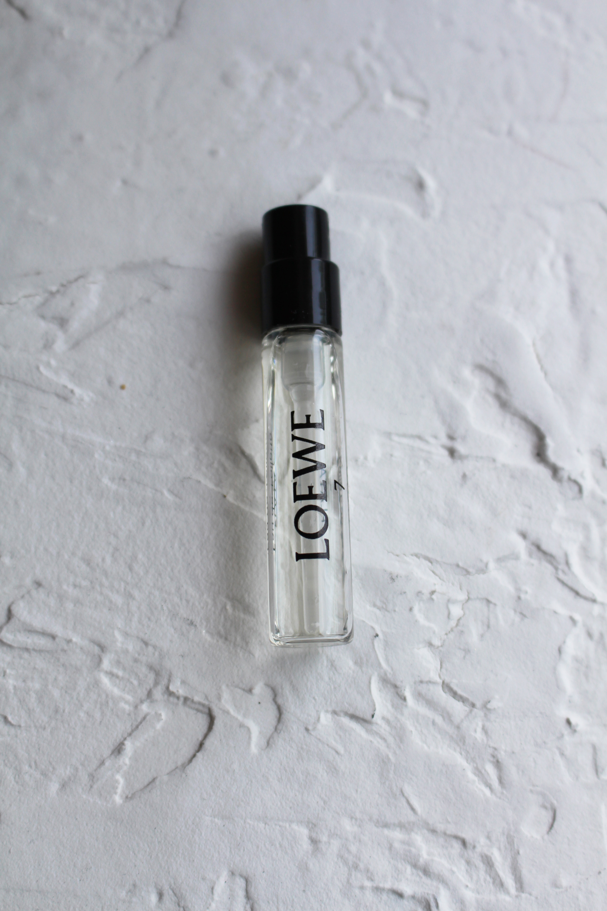

Other
Perfume is an art form that enhances our personal style and leaves a lasting impression. It not only involves the fragrances themselves but also encompasses a range of accompanying items and accessories that contribute to the overall perfume experience. From elegant bottles to application tools and storage solutions, this guide will delve into the world of perfume-related items and provide insights into their significance and use.
Perfume Bottles: Perfume bottles are not only vessels to store fragrances but also works of art that showcase the creativity and aesthetics of perfume brands. They come in various shapes, sizes, and materials, from classic glass designs with intricate stoppers to modern minimalist containers. Some bottles are even collectible pieces sought after by enthusiasts. Atomizers and Spray Bottles: Atomizers and spray bottles have revolutionized the way we apply perfume. They allow for controlled and even distribution of fragrance, ensuring the optimal experience. These portable accessories come in different sizes and are perfect for on-the-go touch-ups or travel, making them a convenient addition to any perfume lover's collection. Perfume Funnel and Decanting Accessories: When transferring perfume from one bottle to another or creating smaller samples, a perfume funnel becomes a handy tool. It ensures precision and minimizes wastage. Additionally, decanting accessories like empty vials or rollerballs are useful for sharing or carrying smaller amounts of fragrances. Scented Candles and Room Diffusers: To extend the perfume experience beyond personal application, scented candles and room diffusers provide an immersive ambiance in living spaces. These fragrance-infused items come in a variety of scents, allowing you to create a mood or atmosphere that aligns with your preferences. Perfume Jewelry: Perfume jewelry combines fashion and fragrance, allowing individuals to carry their favorite scents with them throughout the day. These accessories include necklaces, bracelets, rings, and brooches with hidden compartments that hold solid perfume or feature scent-absorbing materials. Perfume jewelry offers a unique and intimate way to enjoy fragrance discreetly. Perfume Storage Solutions: To maintain the quality and longevity of perfumes, proper storage is essential. Dark, cool, and dry places away from direct sunlight help preserve fragrance integrity. Perfume lovers often invest in perfume trays, cabinets, or display cases, not only for organization but also to showcase their collection as a visually appealing focal point in their space. Perfume Books and Literature: For those passionate about perfume, exploring the world of fragrance through books and literature can be an enriching experience. There are countless publications available, including perfume encyclopedias, historical accounts, ingredient guides, and perfume-making manuals. These resources provide insights into the art, science, and culture of perfumery.